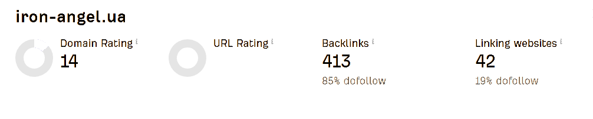

Дублювання контенту
Наявність ідентичних сайтів (.com.ua та .ua). Google сприймає їх як копії, що розмиває авторитет.


Перетворення технічних проблем на можливості для росту та виведення сайту в ТОП пошукової видачі.

Ключові точки, які зараз стримують органічне зростання: дублювання, технічні помилки, URL, мета-дані, відсутність блогу та слабкий профіль корисних посилань.
Наявність ідентичних сайтів (.com.ua та .ua). Google сприймає їх як копії, що розмиває авторитет.
Перелінковка на 404 сторінки. Трафік та боти витрачають ресурс на неіснуючі сторінки.

Адреси сторінок мають некоректний зашифрований вигляд, що негативно впливає на SEO та зручність роботи з посиланнями.
Багато сторінок без H1 та Description. Пошукові роботи не розуміють релевантність запитам.

Не використовується потенціал інформаційних запитів для залучення трафіку на ранніх етапах вибору.

Три послідовні етапи: спочатку аудит і фундамент, потім реалізація та наповнення, далі підтримка, контроль і масштабування.
Окремі витрати та технічна інфраструктура погоджуються перед стартом, щоб впровадження було безпечним для основного сайту.
Співпраця будується поетапно: 50% передплати на старті кожного етапу та 50% — після погодження результатів. Такий формат забезпечує прозорість, контрольовані ризики та чіткі зобов’язання з обох сторін.
Рекомендуємо розгорнути окреме staging-середовище (тестовий сервер) для попереднього впровадження та валідації змін. Це мінімізує ризики простою основного сайту, дозволяє провести QA та перевірку SEO-параметрів до релізу у продакшн.